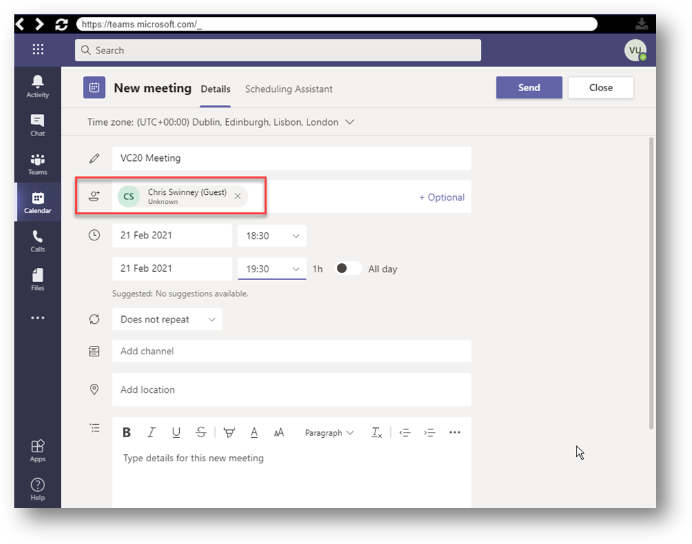
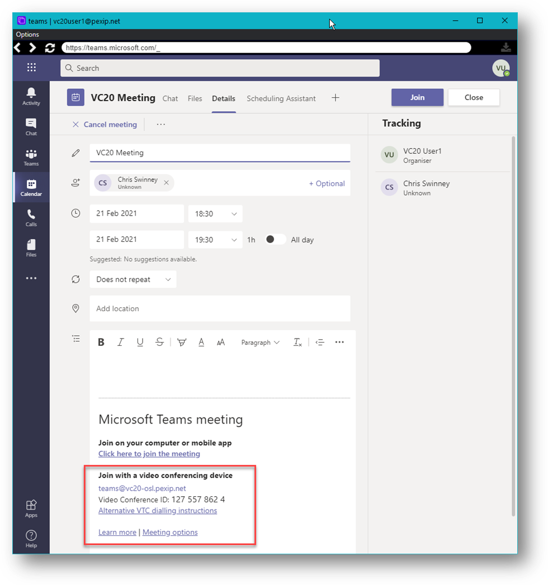
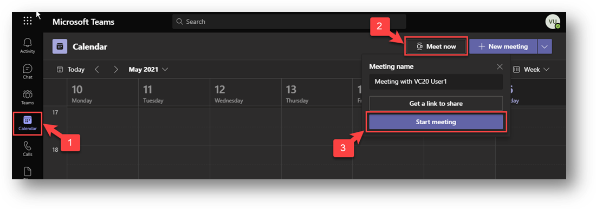

Testing
NOTE: there is a limitation in this lab exercise as we are using a single Azure tenant and MS365 subscription for all trainees. Ideally, we would use a single tenant for each Infinity deployment, but we have yet to find a practical way to achieve this ☹. This limitation means we can only add one CVI setting, which points to just one Infinity deployment. This deployment is our trainer's demo Infinity system (using the domain vc20-osl.pexip.net). Therefore, all trainees will see Teams Invites targeting this domain rather than your Pexip Infinity Domain. To work around this problem, you can substitute the trainer's domain for your Pexip Infinity domain. For example, the Teams meeting Invite will link to the Virtual Reception teams@vc20-osl.pexip.net, so if you were using the domain big-dog.pexipacademy.cloud, you would use teams@big-dog.pexipacademy.cloud. The alias on your Teams VR should also match this URI.
To create a Teams meeting, you need to log in using a Teams client (on your OWN laptop/PC, NOT in the Jumpbox session) using the credentials outlined in Section #13 in the lab sheet (ask your trainer for your VC number). You can do this in several ways.
- If you already use a Teams desktop client for your organisation, you could log out of the Teams client and use the lab login details.
- Use the Teams WebApp (potentially, you may need an incognito browser session) https://www.microsoft.com/en-gb/microsoft-365/microsoft-teams/group-chat-software.
- Use the awesome free Portals app from MyTeams Lab that allows you to set up and test multiple Teams user logins (see https://www.myteamslab.com/2020/01/portals-for-office-365.html). If you use this app, I'm sure he would appreciate a donation.
You can set up a Teams meeting in a couple of ways via the calendar:
1. Using New Meeting:
Click the Calendar Tab, then "New Meeting"

You MUST ensure that you add an attendee (such as your email address) otherwise the Teams Meeting invite details will not be added. Even so, these details will not appear until you have saved the invite and re-opened it:
Initial Meeting invite with no Join instructions:

Meeting Invite re-opened once it has been "Sent":

E.g, you now see in the body of the message:
Join with a video conferencing device
teams@vc20.pexip.net
Video Conference ID: 127 557 862 4
Alternative VTC dialling instructions
Learn more | Meeting options
NOTE: The information seen in the invite is configured as part of the CVI setup when you run the New-CsVideoInteropServiceProvider CmdLet. Specifically, the parameters used within this CmdLet that define this information are (also see https://docs.pexip.com/admin/teams_connector.htm#interop_service_provider):
- TenantKey parameter: This maps to the URI teams@vc20.pexip.net seen under the "Join with a video conferencing device" label.
- InstructionUri parameter: This maps to the Alternate VTC dialling instructions link, which targets the trainer's demo deployment edge node.
As mentioned, there can be only one of these "Pexip" CVI providers per MS365 subscription. So, please ignore the vc20.pexip.net domain you see in the invite and instead use your Pexip Infinity domain.Dialling your domain will, therefore, route the calls through your Infinity deployment, and if you have set things up correctly, all will work just fine.
2. Using Meet Now:
This method is a little clunky, and it may be that Microsoft will continue to work on this (it has changed a few times recently), but at the time of writing, you should be able to follow these steps:
Click the Calendar tab, then Meet Now, then Start Meeting:

Click Join Now (there is a link that says "Other join options", but it simply seems to turn from purple to white and nothing else). Once in the meeting, Click More actions (the three dots in the action bar), then select Show meeting details:

NOTE: As before, the domain seen will be vc20-osl.pexip.net, and the Alternate VTC dialling instructions link will also point to the trainer's demo deployment edge node. Please ignore this and use your Pexip Infinity domain. Dialling your domain will, therefore, route the calls through your Infinity deployment, and if you have set things up correctly, all will work just fine.
Once the Teams meeting has been created, you can connect to it in a couple of ways:
1. Using the indirect Pexip Infinity Virtual Reception to Teams gateway service:
After the Virtual Reception and Call Routing Rules have been configured, third-party systems and devices can now dial into your Infinity deployment (e.g. teams@<your Pexip Infinity domain>). When prompted by the IVR service, enter the meeting code of the Teams conference they want to join. The Pexip Infinity distributed gateway will then route the call into the appropriate Teams conference.
2. Using the direct gateway service:
After the Call Routing Rules have been configured, third-party systems and devices can dial an alias that matches your specified pattern (e.g. teams.1234567890@<your Pexip Infinity domain>). Calls will be routed directly into the appropriate Teams conference (in this example, the conference with a meeting code of 1234567890).
In both cases, try dialling from a registered device or internal client, and an external client to ensure that lobby bypass is working as expected.